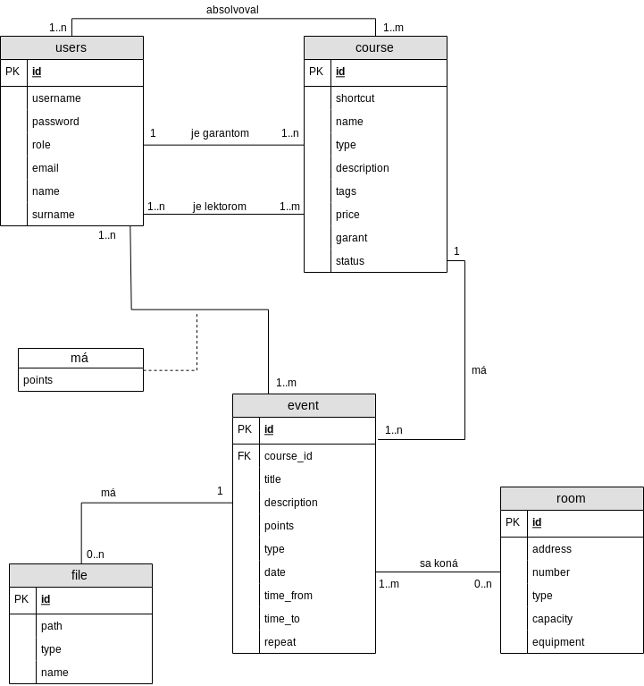

Varianta è. 5 - ©kola: správa a registrace výukových kurzù
- Autori
- Matej Soroka
xsorok02@stud.fit.vutbr.cz - ACL, kurzy, miestnosti
- Alexandra Slezáková
xsleza20@stud.fit.vutbr.cz - Termíny, správa u¾ivateµov, rozvrhy
- URL aplikácie
- http://iis.matejsoroka.com/
- (pokud má aplikace více vstupních stránek, napi¹te obdobnì dal¹í URL)
U¾ívatelia systému pre testovanie
| Login | Heslo | Role |
|---|
| admin | admin1 | Administrátor |
| xleade00 | leader | Vedúci |
| xgaran00 | garant | Garant |
| xlecto00 | lector | Lektor |
| xsleza00 | student | ©tudent |
| xsorok00 | student | Registrovaný ¹tudent |
Implementácia
Správa u¾ivateµov
- Odkaz: /user
- Prístup: admin
Na tejto podstránke administrátor priradzuje role výberom z tzv. gridy klikom na rolu a výberom inej role.
Taktie¾ na tejto stránke administrátor upravuje údaje u¾ivateµa kliknutím na danú bunku a zmenením hodnoty v danej bunke.
Rozvrh
- Odkaz: /timetable
- Prístup: v¹etci okrem neschváleného a neregistrovaného u¾ivateµa
Na tejto podstránke sa nachádza prehµad ¹tudovaných kurzov s príslu¹ným hodnotením.
Taktie¾ sa sem nachádza zobrazenie stavu kurzu v kontexte ¹tudenta (èi má ¹túdium kurzu potvrdené).
Kurzy
Zoznam
- Odkaz: /course
- Prístup: v¹etci
Tabuµka kde sa je mo¾né registrova» ako ¹tudent na daný kurz, alebo ako vedúci schváli» kurz, alebo ako garant alebo lektor kurz editova».
Vytvorenie / úprava kurzu
- Odkaz: /course/edit?id=?
- Prístup: leader, admin, garant kurzu a lektor kurzu
Podstránka so v¹etkými informáciami o kurze, garant a vy¹¹í od neho ju vidia v plnom znení, lektor vidí len zoznam termínov.
- Vytváranie termínov
- Schvaµovanie ¹tudentov do kurzu
- Výber miestností pre termíny
- Výber lektorov
Termíny
Vytvorenie / úprava termínu
- Odkaz: /event/edit?course_id=?
- Prístup: leader, admin, garant kurzu a lektor kurzu (len editácia)
Podstránka pre vytvorenie termínu a následné zadávanie bodov registrovaným ¹tudentom
Taktie¾ pri výbere miestností k danému termínu si mô¾eme prezrie» rozvrh v danom dátume kliknutím na tlaèidlo
Obsahuje aj správu súborov
Detail termínu
- Odkaz: /event/detail?eventId=?
- Prístup: V¹etci
Obsahuje podrobnosti a získané body z termínu
Miestnosti
- Odkaz: /room
- Prístup: admin
Správa miestností
Prihlásenie a registrácia
- Odkaz: /sign/in|up
- Prístup: v¹etci
Po registrácií sa za¹le na zadanú e-mailovú adresu vygenerovaný login, ktorým sa prihlásite do systému
To znamená, ¾e je mo¾né sa do systému registrova», no po registrovaní je nutné aby administrátor potvrdil registráciu (zmena role)
Práva
Práva sú implementované formou podobnou ACL. Sú implementované v súbore app/model/AuthFactory.php
Databázový model

Instalace
- Apache/Nginx server nasmerovaný do zlo¾ky www ktorá obsahuje index.php súbor
- Doporuèená verzia PHP je 7.3
- Po rozbalení a nastavení webového serveru je nutné nain¹talova» závislosti:
- Backend: v koreòovej zlo¾ke pomocou balíèkového systému composer spusti» príkaz: composer install
- Frontend: v zlo¾ke www/ pomocou balíèkového systému bower spusti» príkaz: bower install
- V zlo¾ke database sa nachádzajú SQL skripty pre vygenerovanie DB ¹truktúry, skripty vytvoria aj u¾ivateµské úèty spomenuté vy¹¹ie
- Pripojenie na DB server sa realizuje v súbore app/config/local.neon
- Na nahratom servery sú rovnaké data, t.j. len u¾ivatelia
Známé problémy
404